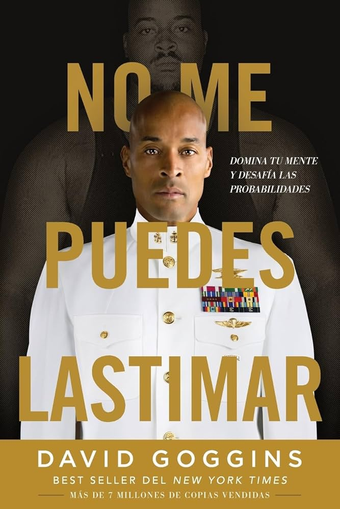
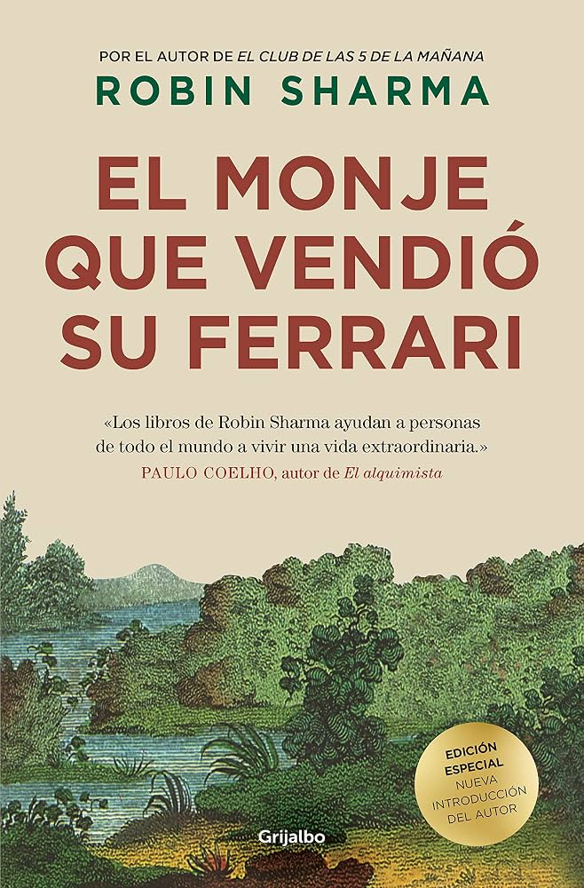
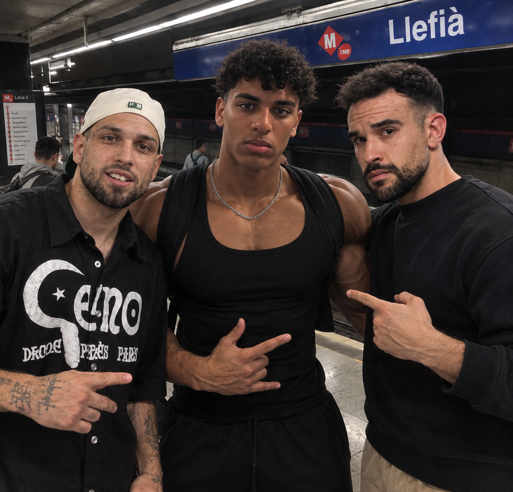
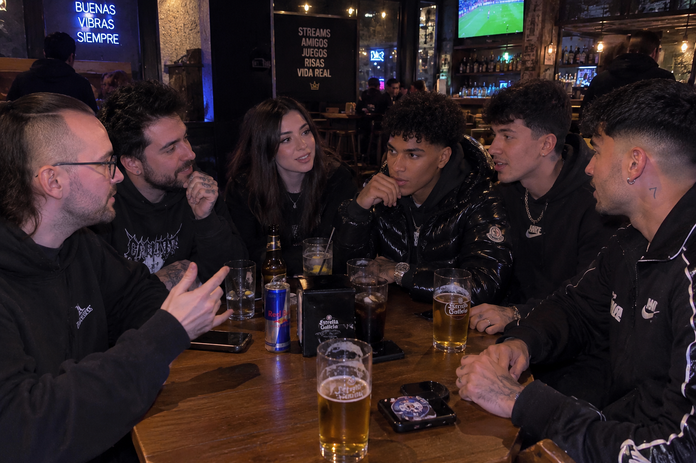
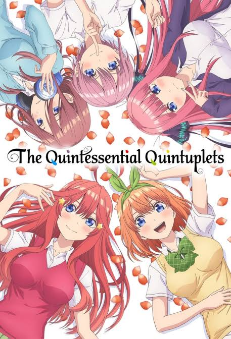

Lectura
M'agrada llegir perquè és una manera molt bona de desconnectar una estona i entrar en altres històries. Quan llegeixo, puc conèixer personatges diferents, imaginar-me els llocs on passen les coses i descobrir noves maneres de pensar. A més, cada llibre m'aporta alguna cosa, ja sigui una idea, una emoció o simplement un moment tranquil per a mi.


Videojocs
M'encanta jugar a videojocs, sobretot a Rocket League, perquè és divertit i cada partida és diferent. M'agrada jugar amb els meus amics, intentar marcar gols i millorar a poc a poc, encara que de vegades també perdem alguna partida. També jugo a Valorant, un joc en què cal estar atent, pensar ràpid i comunicar-se amb l'equip per aconseguir la victòria.
Temps amb amics
M'encanta passar temps amb els meus amics perquè amb ells em sento còmode i puc ser jo mateix. M'agrada parlar de qualsevol cosa, riure'ns de situacions absurdes i compartir moments, encara que siguin coses senzilles. Per a mi, els amics són importants perquè em donen suport quan ho necessito i fan que qualsevol dia sigui més divertit.


Veure sèries
M'agrada veure sèries, sobretot les d'acció i les de romanç. M'agrada començar una sèrie i anar descobrint la història capítol rere capítol, fins al punt que de vegades em costa deixar-la. Les d'acció m'agraden perquè tenen aventures i moments de tensió, mentre que les de romanç m'interessen perquè expliquen les relacions i els sentiments dels personatges.

